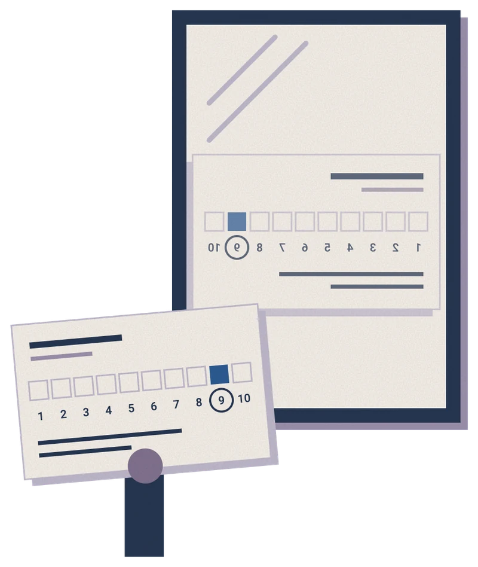
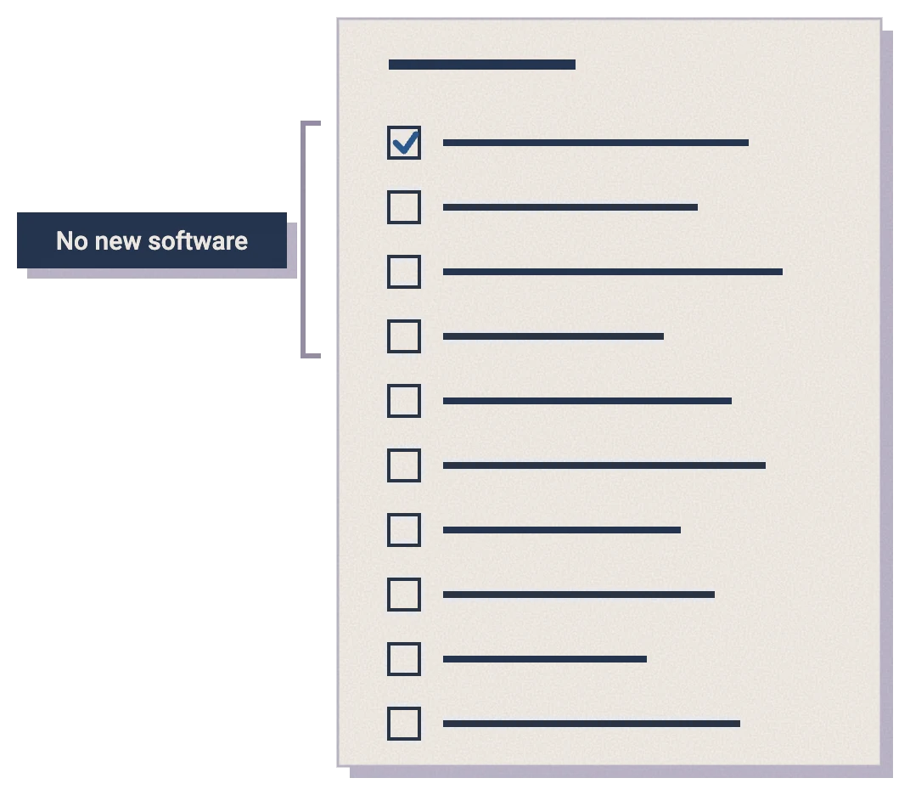

The State of Interview Intelligence
Capture is solved.
Everything that comes after it isn't.
Sponsored by

Capturing and transcribing an interview has become routine. Turning that record into better decisions remains unfinished work.
Foreword
We've spent fifteen years instrumenting every part of hiring except the part where the decision gets made.
You've moved it from recollection to record.
Capturing an interview isn't the same as learning anything from it, and the gap between those two things is where the next several years of this category will be decided.
Read in full
A few years before I came to Textio, I sat in a debrief for a senior role where four smart people had spent a combined six hours with the same candidate. We went around the table. Two yeses, one no, one shrug.
Then somebody asked the question that ended the meeting, which was simply: what did she actually say when you asked about the reorg?
Nobody could answer. Not one of us. We'd all been in the room, we'd all formed a view, and between the four of us we couldn't reconstruct a single thing she'd said with enough fidelity to compare our impressions against each other. We hired her anyway. She was good. That's not the point. The point is that we made a six-figure decision on the basis of four memories that had already started rewriting themselves before we sat down.
I've thought about that meeting a lot since taking this job, because it describes something that's true almost everywhere and that almost nobody talks about. We've spent fifteen years instrumenting every part of hiring except the part where the decision gets made.
We can tell you the source of a candidate, the time they spent on the careers page, the day their application moved stages, and the exact hour an offer was extended. Ask what happened in the interview and you get a paragraph somebody typed from memory, if you get anything at all.
That's why we built Lavalier, and I want to be careful about how I say this, because this report wasn't written to sell it. The bet isn't that software makes interviewers smarter. The bet is that the interview is the single richest source of evidence in the entire hiring process and that almost all of it evaporates within about ninety minutes of the conversation ending.
If you can hold onto even a portion of it, in a form you can compare and revisit, you've changed the character of the decision.
Matt and the team at Kyle & Co designed this study, fielded it, and interpreted it without us. We paid for the work and we saw the findings when they were done. That was the arrangement and I'd make it again, in part because the findings include several things I wouldn't have chosen.
The one that stayed with me is this. Eighty-five percent of the employers in this study already run some form of interview intelligence tooling. Adoption, by any normal definition, is finished. And on the measures candidates actually experience, almost nothing has moved. Feedback, closure, whether anyone understood how they were being judged. Flat.
That should bother every vendor in this category, including mine, and it should bother us more than it bothers our customers, because we're the ones who said the tooling would matter.
I read that as an unfinished job rather than a failed premise. Capturing an interview isn't the same as learning anything from it, and the gap between those two things is where the next several years of this category will be decided.
The report you're about to read is the clearest map I've seen of that gap - and the most actionable advice about how to fix it I’ve seen, too.
Introduction
Pick a hire from the last quarter and ask everyone who interviewed that person one question: can you produce the evidence you used to make that decision?
Why this report exists
Once organizations start recording interviews, it's easy to treat capture as the finished job.
What you'll learn
We close with ten practical takeaways; the first four require no additional software spending.
Read in full
Any recruiter can run a useful test of their hiring process in a few minutes, at no cost. It may tell you more than the dashboard that took six months to implement.
Pick a hire from the last quarter and ask everyone who interviewed that person one question: can you produce the evidence you used to make that decision?
The answer should cover what interviewers asked, how the candidate responded, how those responses were scored and why that person was chosen over the other finalists. Job descriptions, requisition approvals and offer letters won't tell you that.
Most hiring stakeholders will come back with one of three things.
The most common is the resume, whose death has been announced considerably more often than it's occurred. When that's the main evidence, the interview risks becoming an exercise in confirming what the candidate already supplied; validating a resume tells you relatively little about what happened in the conversation.
The second is a scorecard, usually with half a dozen subjective categories such as "communication style," "executive presence" or "culture fit," each scored from 1 to 10. Giving an impression a number makes it easier to file; it doesn't necessarily make it useful to measure.
The third is unstructured feedback: interpersonal chemistry, perceived compatibility or a judgment call. Personal preference can acquire the appearance of evidence remarkably quickly once someone puts it in writing.
That's an odd outcome for a function so invested in measurement. Employers track funnel performance, source attribution, conversion and programmatic spend in considerable detail. But a number only becomes useful when it helps answer a meaningful question.
Meanwhile, the conversation that often decides who gets hired remains poorly measured. An employer may be able to trace a candidate to a job board click from two years ago, then struggle to explain what happened in the hour-long final interview that determined the outcome.
Why this report exists
The premise is straightforward: interviews generate some of the most valuable evidence in talent acquisition, yet few organizations make much use of it after the decision.
There's a practical history behind that waste. Interview conversations happen outside core systems and established workflows, making them difficult to capture, structure and analyze. Legacy HR systems were built primarily to keep records; learning from conversations was never their strong suit.
The wider opportunity explains why this report spends as much time on business intelligence as it does on talent acquisition. A manager's description of a role can reveal how far the job has moved from its official definition. Differences between interviewers' scores can expose disagreement about what good performance looks like, well before it surfaces in a performance review or an unexpected resignation. Those are business questions that happen to begin in a hiring conversation.
Sales offers a useful precedent. Conversation intelligence made customer calls valuable beyond the notes: taken together, those conversations can reveal competitive threats, pricing pressure and churn risks. Talent acquisition has a similar opportunity, which remains largely untapped.
Once organizations start recording interviews, it's easy to treat capture as the finished job. The findings suggest how much work remains after the transcript arrives.
What you'll learn
Eight major findings frame the state of interview intelligence. The sections that follow examine the survey results, introduce a maturity model and explain how leaders differ from the rest of the sample.
We close with ten practical takeaways; the first four require no additional software spending.
Textio funded this study and had no role in its design, analysis or conclusions. The full terms are outlined in the Methodology.
About the Survey
Two mirrored surveys fielded in August 2026: 257 employers and 174 job seekers, with 40 percent of questions worded so both groups answered the same thing from opposite sides of the table. Structured interviews with talent and HR leaders ran alongside and are quoted throughout. Full methodology is at the back.
Executive Summary
Capturing and transcribing an interview has become routine. Turning that record into better decisions remains unfinished work.
The responses from 431 employers and job seekers illustrate the problem: employers can replay an interview, but the recording doesn't tell them whether its judgments were sound.
Read in full
Recording a video call and producing a transcript are now standard capabilities. With 85 percent of employers using interview intelligence tools, adoption is widespread; the findings on calibration, transparency and closure show why that milestone can't stand in for better execution.
The responses from 431 employers and job seekers illustrate the problem: employers can replay an interview, but the recording doesn't tell them whether its judgments were sound.
That requires comparing interview evaluations with what happened after the hire, and preserving enough reasoning to explain the original decision. Many of the leaders we interviewed had done little of either.
Meanwhile, useful information about role clarity, manager alignment and market conditions remains largely unused.
Eight findings show where the gap is, why it exists, and where it's most pronounced.
1Major Finding 1Employers and candidates describe the same process and produce opposite scores
Employers give their own interview experience a score of +48 on a scale from -100 to +100; candidates give theirs +3. Only 11 of 257 employers rated their process poorly, compared with 59 of 174 candidates. The forty-five-point gap suggests the two groups have different ideas about how well this is working.
Employer scores cluster closely; candidate scores vary much more. That pattern suggests the experience is less consistent than the policy implies. A process can look excellent in a slide deck and feel very different on a Tuesday afternoon.
2Major Finding 2Confidence in the interview outpaces the evidence
Employers rate their interviews 8.3 out of 10 for predicting job performance, and 94 percent give themselves a seven or better. Published research offers a useful reference point: an estimate around .42 for structured interviews on a correlation scale where 1.0 represents perfect prediction.
Those figures measure different things, so they can't be compared as equivalent scores. The practical question is whether employers have checked their confidence against outcomes. Among the talent leaders we interviewed, only a handful had compared interview scores with subsequent performance.
3Major Finding 3Half of candidates get a consistent interview. Most employers think they deliver one
Fifty-one percent of candidates said their process felt structured and consistent; 41 percent said parts felt standardized and parts improvised, and 7 percent said the interviewer was visibly winging it.
Seventy-eight percent of employers are confident they could produce complete interview records if a decision were challenged in court. Candidates, meanwhile, appear comfortable with structure that leaves room for conversation: 20 percent prefer a fully structured interview and 52 percent favor a mix.
4Major Finding 4Candidates don't know how they're being judged
Candidates rate their understanding of how they're evaluated at 6.79 out of 10, the survey's lowest score and the one with the widest variation. Fully twenty-three percent said no employer explained how their success would be measured, or gave only a vague answer when asked.
Few problems in this report are easier or cheaper to address.
5Major Finding 5Capture is done. Nobody's started on the hard part
Eighty-five percent of employers already use interview intelligence tools, and 97 percent are at least piloting them. Recording and transcription are widespread; the work required to improve evaluation is much less established.
The requirements are familiar: apply consistent judgment, explain the criteria, communicate a decision and check whether the interview predicted performance.
Progress depends heavily on how organizations assign responsibility and run the process.
6Major Finding 6Both sides assume the other one's lying
Employers rate their ability to detect live candidate AI use at 8.11 out of 10, while only 36 percent consistently use standardized questions and a defined rubric. Many therefore lack a consistent foundation for comparing answers. Candidate responses leave the frequency of AI use unresolved:
- Asked directly, 4 of 174 candidates said they had used AI live during a video interview.
- Asked a second way later in the same survey, 17 admitted using AI covertly and 20 more said someone had helped them answer in real time.
Question wording changes what people disclose, which makes the wording essential context for any statistic about candidate AI use.
7Major Finding 7Employers say they give feedback and closure. Candidates say they don't get it.
Eighty-one percent of employers say rejected finalists always or usually get real feedback. Forty-three percent of candidates rejected at the final round say they got anything useful.
Ghosting runs the same way: 68 percent of employers admit they failed to give a final answer to someone who had interviewed, and 57 percent of candidates say it happened to them in the past eighteen months.
In Ontario it’s now a legal matter; according to a new provincial law that was effective January 1, employers with 25 or more staff must tell every interviewed candidate the outcome within 45 days.
8Major Finding 8Candidates judge the process, not the outcome
Fairness and communication account for two-thirds of responses about what makes a hiring process good. Getting the job ranks last, at 6 percent, even though it's the candidate outcome most employers track.
In other words, bad news is better than no news at all.
Section 1:
The Current State of Interview Intelligence
Almost nothing about the modern interview was designed. It accumulated, like a junk drawer.

The pattern hasn't changed in a century.
Checking whether the successful candidates became successful employees tends to come later, if it happens at all.
Structured interviews have ranked at or near the top of selection-validity research for decades (most recently Sackett, Zhang, Berry and Lievens, Journal of Applied Psychology, 2022).
Adoption is already widespread. Eighty-five percent of employers in this study use interview intelligence tooling across some or most of their interviews, and 97 percent are at least piloting it. The harder question is what that adoption delivers.
Establishing whether it improves hiring takes a different kind of evidence.
Interview intelligence is three layers, and most buyers own one
"We had recordings. Nobody was watching the recordings, because watching recordings is not anybody's job."

Someone has to own the analysis.
In many organizations, that responsibility remains unassigned.
Read in full
In 1921, Thomas Edison decided college graduates were ignorant and built a 146-question test to prove it; other companies copied the format, without copying the reasoning.
For most of the 2000s, thousands of employers copied Google's brainteasers, until Google compared tens of thousands of its own interview scores against subsequent performance and found no relationship between them.
A senior leader has a theory about what predicts performance; the theory becomes a set of questions, and other employers borrow them because the company is successful. Checking whether the successful candidates became successful employees tends to come later, if it happens at all.
Structured interviews have ranked at or near the top of selection-validity research for decades (most recently Sackett, Zhang, Berry and Lievens, Journal of Applied Psychology, 2022). Yet an unstructured conversation can leave an interviewer feeling so certain that checking the evidence seems unnecessary.
Recruiting technology spent much of the past fifteen years improving the work around the interview. Capturing the conversation was technically difficult, and changing it meant entering territory hiring managers considered their own.
The technical obstacle is gone; that’s where this study picks up.
Asked what their organization is investing in AI to achieve, employers could select up to three of ten answers. Efficiency and speed of service delivery led at 51 percent, followed by improving decision quality across the business at 45 percent.
Driving innovation and competitive advantage ranked fourth at 35 percent. Efficiency has the lead, but six percentage points hardly establishes that employers have abandoned better decisions as a goal.
These responses describe broader AI investment priorities, too, rather than the demonstrated results of interview intelligence.
The more revealing finding is that only 23 percent report using interview intelligence to improve interview quality or reduce bias.
That points to a gap between the ambition to improve decisions and the use of these tools to improve evaluation. It doesn't mean everyone else has stopped at efficiency; it does mean adoption alone gives us little evidence of progress on interview quality or bias.
A software purchase is an easy milestone to count. Establishing whether it improves hiring takes a different kind of evidence.
Capture is well established. The more useful question is how many employers are turning those records into decisions they can examine and improve.
Interview intelligence is three layers, and most buyers own one
The three layers help explain the category, but buyers need a more precise way to assess their own practices. An employer beginning to analyze interview data faces different problems from one that hasn't started.
The five levels below make that distinction using reported practices, rather than asking employers to award themselves a maturity rating.
Section 2:
The Interview Intelligence Maturity Model
Buyers need a practical way to assess where they stand.

This model combines the survey responses with the qualitative interviews; no level rests on a single question or an employer's own maturity rating. Confidence is useful context, but it's a poor substitute for a description of what actually happens.
1 - Ad hoc
Questions vary by interviewer. Either no rubric exists or nobody follows one.
2 - Documented
Core questions and a rubric exist and are usually followed, but adherence isn't measured and records may not be retrievable.
3 - Instrumented
Core structure is in place, tools are live across at least some teams, and employers are confident they could produce complete documentation on demand. Interviews are captured, but systematic use of that evidence isn't established.
4 - Analyzed
Structure applies to every role, tools cover most interviews, and AI supports decisions across multiple HR functions. These conditions serve as indicators of analytical capability.
5 - Calibrated
The organization meets Level 4 requirements, connects data across systems under governance and assigns formal accountability for experience and outcomes. Those conditions make it possible to validate interview judgments against post-hire performance.
Each level builds on the one below it. AI adoption alone can't move an employer to Level 4; it must also meet the structure, tooling and documentation requirements. Employers receive the highest level for which they pass every gate, with the definitions detailed in the Methodology.
Half the market has purchased tech no one uses
The next step is deciding who will examine the output, what they'll look for and what authority they'll have to act.
Employers describe a process one level above the one they run
Confusing the presence of a record with the use of evidence helps explain why administrative improvements have outpaced analytical ones.
Crossing into Level 4: Operational Governance Over Technology Acquisition
Moving from Level 3 to Level 4 requires three commitments that a software purchase can't make on the organization's behalf:
Reaching Level 5: Closed-Loop Performance Integration
- A named owner: give one person explicit responsibility for interview quality, rather than leaving it with the system administrator by default.
- A recurring cadence: review conversation analysis regularly, with people who have the authority to change the process.
- Executive tolerance for bad news: examine findings even when they reflect poorly on senior interviewers. Progress often becomes harder at exactly that point.
Interview evaluations connected with post-hire performance records (ATS + HRIS)
The Interview Intelligence Efficacy Index
Four of its five dimensions depend primarily on process decisions, giving employers room to improve without another purchase.
| Dimension | What it measures | What our research says |
|---|---|---|
| Consistency | Whether candidates get the same core questions against a standardized rubric, with records retrievable inside two business days | 52% of employers say "structure exists but adherence varies"; only 36% say always. 51% of candidates reported the interview process matched their expectations. |
| Closure | Whether interviewed candidates get a definitive outcome, whether finalists get actionable feedback, and whether decisions close within two weeks | 68% of employers admit ghosting; 17% give feedback only when asked |
| Transparency | Whether criteria are published in advance, success measures are explained upfront, and automated tools are disclosed | Candidates score understanding of evaluation 6.79 out of 10; 23% never heard how success would be measured, or got a vague answer |
| Proportionality | Whether rounds are capped and defended, candidate time stays under five hours, and take-home assignments are compensated or eliminated | 62% run three rounds; 44% of candidates say two is enough |
| Calibration | Whether interview scores are cross-referenced with job performance annually, evaluator-level bias is corrected, and those insights drive structural change | Employers rate predictive accuracy 8.3 out of 10 against a published estimate near .42 |
Read in full
Levels 4 and 5 are inferred, rather than measured directly. Because the survey didn't ask whether organizations analyze interview data, AI-maturity and accountability responses serve as proxies. Treat the estimates as upper bounds: actual activity may be lower.
Half the market has purchased tech no one uses
Sixty-three percent of employers reach at least Level 3, combining structure, live tools and confidence that records are retrievable. Roughly four in five of that group go no further. That is one of the study's most consequential findings.
These organizations have already bought the tools. The next step is deciding who will examine the output, what they'll look for and what authority they'll have to act.
Employers describe a process one level above the one they run
Eighty-eight percent say interviewers always or usually use the same core questions and a defined rubric; only 36 percent say always, the requirement for Level 4. Seventy-eight percent feel confident about producing complete records under legal challenge, and employers rate predictive power at 8.3 out of 10.
Across organization sizes and industries, those broad claims describe a more mature process than the reported practices support.
A transcript can create the appearance of analysis, just as a scorecard in a shared folder can create the appearance of consistent evaluation. Confusing the presence of a record with the use of evidence helps explain why administrative improvements have outpaced analytical ones.
Crossing into Level 4: Operational Governance Over Technology Acquisition
Reaching Level 5: Closed-Loop Performance Integration
Level 5 requires connecting interview evaluations with post-hire performance records. Linking ATS and HRIS data takes real engineering work; agreeing to examine what the connection reveals, however, can be harder. This political sensitivity deserves as much attention as the integration itself.
The Interview Intelligence Efficacy Index
The maturity model locates an organization along the path; the Efficacy Index defines the practices worth examining.
Four of its five dimensions depend primarily on process decisions, giving employers room to improve without another purchase.
Calibration is the least developed dimension. A recording tool can supply evidence, but someone still has to connect it to outcomes and examine the result.
Consistency, closure, transparency and proportionality likewise require decisions about how, exactly, the process will run.
Section 3:
How Leaders Differ from Laggards
Fourteen percent of employers reach Level 4 or 5; 37 percent sit at Level 1 or 2.

The gap opens after the interview ends
Software can make that easier, but it can't make the commitment.
The procurement illusion
Fifty-nine percent of laggards have bought interview intelligence platforms. Their reported ghosting rate is still 86 percent, which puts the limits of procurement into fairly clear perspective.
Where the leaders are
What leaders are held accountable for
The more useful starting point is accountability for process execution, where recruiting has direct control and can establish a foundation for better hiring.
Self-assessment isn’t self awareness
Every tier rates itself well. Leaders return a Net Promoter Score (NPS) of +72, laggards +21.
Read in full
Comparing these groups shows where more advanced interview intelligence practices are associated with different results.
Some of the clearest differences emerge after the interview ends.
The gap opens after the interview ends
- Ghosting: 16 percent of leaders failed to give an interviewed candidate a final answer in the past twelve months, compared with 86 percent of laggards.
- Feedback: every leader says rejected finalists always or usually receive substantive feedback; two-thirds of laggards say the same.
- Documentation: leaders rate their ability to produce complete records at 8.89 out of 10, compared with 7.46 among laggards.
Each requires an organization to establish a practice, assign responsibility and follow through on execution. Software can make that easier, but it can't make the commitment.
The procurement illusion
At 85 percent adoption across the sample, owning the software tells us little on its own. The stronger distinction is how consistently organizations manage the work after the interview.
Where the leaders are
Leaders appear in every headcount tier, with the greatest concentration among mid-sized organizations. These employers combine enough hiring volume for useful analysis with more manageable operational complexity.
Large enterprises are heavily represented at Level 3: sophisticated capture tools, substantial archives and difficulty connecting interview records to post-hire performance.
What leaders are held accountable for
Leaders rate their predictive accuracy at 8.86 out of 10, compared with 7.77 among laggards. That establishes greater confidence, not greater accuracy. Even at the higher maturity levels, self-assessment needs an independent check.
Accountability produces a less intuitive result: 67 percent of laggards say HR is formally accountable for hiring outcomes and quality of hire, compared with 50 percent of leaders.
The difference is especially pronounced at Level 4. Every Level 5 employer meets the accountability requirement by definition; among the 24 employers at Level 4, only 6 report it. That's a quarter of the group, compared with two-thirds of laggards.
Holding a team accountable for outcomes gives it little room to improve if it can't understand or influence them. The more useful starting point is accountability for process execution, where recruiting has direct control and can establish a foundation for better hiring.
Self-assessment isn’t self awareness
The 51-point spread shows that the cohorts see their capabilities differently. Both still rate themselves above the candidate sample's +3; even laggards, at +21, are 18 points higher. That leaves a substantial perception gap across the maturity model.
At any maturity level, self-assessment tells us how employers see their process. It needs to be read alongside evidence of what candidates experience.
The remaining sections examine that distance through the five Efficacy Index dimensions, comparing employer and candidate responses and identifying the practical implications. We begin with the widest gap.
Section 4:
The Confidence Gap
Calibration examines whether interview judgments are checked against what happens after the hire.

- +48
- Employers score their own interview experience
- +3
- Candidates score theirs
Employers score their own interview experience +48. Candidates score theirs +3.
Both numbers come from the same mirrored question:
Employers may therefore be rating the intended process, while candidates are rating its delivery.
Employers rate their interviews 8.3 out of 10.
Asked how well their interviews predict on-the-job performance, employers averaged 8.3. 95% of all employer respondents rated their ability to accurately forecast future performance based on interview data. Candidates, asked the mirrored question, averaged 6.93.
"Anyone rating their own interviews a nine is not making a claim about interviews. They are making a claim about themselves."
The same respondent made the methodological point exactly:
Without validation, an organization risks confusing the confidence of its interviewers with the accuracy of their judgments, then assigning its most consequential decisions accordingly.
The true cost of the confidence gap
Candidates can also be customers, and a hiring process gives them a fairly direct demonstration of how the company treats people.
Read in full
Employers score their own interview experience +48. Candidates score theirs +3.
- Employers were asked how likely they'd be to recommend their own organization's interview experience if they went through it tomorrow as a candidate.
- Job seekers were asked how likely they'd be to recommend their most recent interview process to a friend.
Employers returned +48: 52.5 percent promoters and 4.3 percent detractors, eleven people out of 257. Candidates returned +3: 36.8 percent promoters and 33.9 percent detractors, fifty-nine people out of 174.
Employers' responses clustered closely, while candidate scores covered a much wider range. The two groups appear to be evaluating the process from very different vantage points.
One plausible explanation is that employers are rating the process they designed: the version documented in the ATS, reflected in training materials and presented to leadership.
Candidates experience the process through individual interactions. The recruiter assigned to a role, the hiring manager's workload and the communication after an interview can all shape that experience, whether or not the candidate knows what's happening behind the scenes.
Employers may therefore be rating the intended process, while candidates are rating its delivery.
The 45-point gap makes execution worth a closer look. It's easy to admire the blueprint when you're rarely asked to walk through the building.
Employers rate their interviews 8.3 out of 10.
The published estimate of around .42 for structured interviews offers context, although it isn't directly comparable with a self-rating out of ten. One describes measured prediction; the other describes how confident employers feel about it.
Confidence can persist when interviewers receive little meaningful feedback on their judgment.
Consider an interviewer who meets a hundred candidates and recommends twenty. They see what happens to the people who are hired; those who perform well become evidence that the interview worked.
The eighty rejected candidates largely disappear from view, along with any opportunity to learn whether they would have performed better. That makes an interviewer's personal record feel reassuringly strong, even when the evidence is incomplete.
"The published ceiling on structured interviewing is around .42 corrected, and .42 is genuinely good. It is also not what an eight or a nine implies."
An engineering director in San Jose who has run about two thousand interviews told us he can tell within twelve minutes,
"and the reason is that I have done roughly two thousand of these. Pattern recognition is a real cognitive faculty, not a bias to be trained out of me."
His experience may support that confidence. But his current process can't test the claim, or distinguish it from the same claim made by a less capable colleague.
The true cost of the confidence gap
Candidate dissatisfaction reaches beyond recruiting. Fifty-six percent say a poor interview experience would discourage them from reapplying; 35 percent say it would discourage them from buying from the company.
For retailers, banks and other consumer-facing employers interviewing thousands of people, those responses point to a commercial risk. Candidates can also be customers, and a hiring process gives them a fairly direct demonstration of how the company treats people.
Marketing has a stake in that experience, even though recruiting produces the data. Keeping interview feedback inside HR limits its usefulness to the wider business.
Section 5:
The Data We Generate and Throw Away
Calibration depends on the evidence that makes that comparison possible, and on what employers do with it.

- 49%
- list improving quality of hire among their top workforce priorities
The interview's value as a hiring input is only part of the story.
The strongest signal in the employee lifecycle, and the most ignored
That's an impressive rate of information loss for a process that costs so much to run.
The organizations that checked learned things nobody else knows
Popularity had been doing work that predictive evidence should have done.
Six things the transcript may already be telling you
The applications below are hypotheses, not findings tested by this survey. They reflect recurring uses described in the qualitative interviews and suggest where further analysis could be useful.
| Signal | What the transcript shows | What it may predict |
|---|---|---|
| Role drift | How hiring managers describe the same role, live, across many conversations, against the job description of record | Job architecture decay, and the pay and mobility problems that follow |
| Evaluator alignment | Score dispersion across a panel for the same candidate | Whether a leadership team agrees on what good looks like |
| Compensation intelligence | Candidate-stated current pay, counteroffers and reasons for leaving | Competitor pay movement, ahead of published survey data |
| Attrition signal | Why candidates are leaving their current employers, unsanitized by any relationship they need to protect | Systemic problems that may already exist inside your own walls |
| Competitive intelligence | How senior candidates from rival firms describe solving shared problems | The kind of market read go-to-market teams pay for |
| Adverse impact | Variance in questioning, tone and interruption across candidate groups | Bias patterns invisible in aggregate hiring outcomes |
Regarding inputs demonstrating adverse impact, research presented at the ACM FAccT conference on asynchronous video screening found that the medium itself suppressed disclosure and reduced perceived fairness for candidates with disabilities and from underrepresented backgrounds, whether a human or an algorithm did the evaluating.
Nobody has the data to measure quality of hire
Measurement is less settled. The most common approach described in our interviews was a manager satisfaction survey at ninety days, followed by retention and first-year turnover. Some use a combination of performance ratings, ramp time and retention; a third acknowledge that they don't measure quality of hire at all, including some who talk about it regularly.
Our research suggests why the distance between priority and practice persists: organizations often have outcome data without a useful record of the original decision.
Why no one uses the data
Those uncomfortable conversations are part of the work.
Read in full
Over the next thirty-six months, organizations that make use of the other information in those recordings could gain a meaningful analytical advantage.
The strongest signal in the employee lifecycle, and the most ignored
A forty-five-minute interview produces a substantial record: how a candidate describes their experience, responds to follow-up questions and reasons under pressure; what they ask about the role; how the manager explains the job; and what the interviewer concludes. The differences between that live account and the job description can be revealing in their own right.
What survives is often a number or two, a few sentences of feedback and a decision with little explanation.
Picture a sales organization that ran forty-five minute discovery calls with qualified prospects and kept only a one-to-five rating and the phrase "good fit, strong need."
That organization existed, more or less, until 2018. Then conversational intelligence showed up.
Conversational intelligence gave sales teams a reason to keep and examine more of those calls. Taken together, customer conversations could reveal competitive threats, pricing pressure, product gaps and churn, as well as improve the notes.
Hiring presents a useful parallel. Candidates offer a continuing view of how the labor market perceives the company, its roles, compensation, competitors and leadership.
Employers spend real money collecting those perspectives, often hundreds of times a year, from people actively considering whether to join them.
Much of that information then disappears from practical use.
The organizations that checked learned things nobody else knows
Only a handful of the leaders we interviewed had compared interview evaluations with post-hire outcomes. Their accounts followed a similar pattern.
A director of talent acquisition at a financial services firm in Des Moines walked us through it.
"We pulled interview scores against twelve-month performance ratings for about four hundred hires. Two things came out. The process holds up better than I feared in aggregate, which was a relief. And three of our most requested interviewers, the ones hiring managers specifically ask for, had almost no correlation between their scores and how those people performed."
Consider what that exercise allowed the organization to learn:
- It found evidence that the process worked in aggregate, giving the team something more useful than reassurance.
- It identified substantial differences between interviewers that had previously been difficult to see.
- It found that three of its most requested interviewers had little relationship between their scores and subsequent performance. Popularity had been doing work that predictive evidence should have done.
Until that comparison, the arrangement had given people little reason to question it.
An engagement survey, exit interview or hiring-manager satisfaction score wouldn't have answered the same question.
The insight required connecting and standardizing two datasets that usually sit in different systems, under different owners.
Google, for example, discovered similar insights a decade ago, and at a much more significant scale.
An interview process is difficult to improve when nobody checks what its judgments predict. Collecting the evidence and then letting it expire leaves that question unanswered.
Six things the transcript may already be telling you
They draw on the kinds of conversation data that 85% of employers already report capturing.
Conversational data may make patterns visible that aggregate hiring outcomes don't readily explain.
Nobody has the data to measure quality of hire
Quality of hire is the priority employers name most often. Forty-nine percent list improving it among their top workforce priorities this year, ahead of every other option, and 60 percent say their HR organization is held accountable for outcomes like quality of hire, retention and engagement.
LinkedIn's ongoing research consistently finds quality of hire to be the most important talent metric and the hardest to capture with any rigor.
Performance reviews, tenure and learning records typically sit in the HRIS, alongside other information about employee outcomes.
The missing connection often begins much earlier, during hiring.
Employers can't test an interviewer's accuracy if the scores and reasoning behind the original decision were never captured, or can no longer be retrieved.
Recording the conversation doesn't automatically preserve the reasoning that turned it into a hiring decision.
The standard proxy, therefore, has a validity problem. A VP of talent acquisition at a healthcare network in Nashville put it directly:
"A ninety-day satisfaction survey measures interpersonal affinity, which is a completely separate property."
A satisfaction measure can, for example, reward a nurse's bedside manner without distinguishing it clearly from clinical performance. Both deserve attention; combining them without a clear definition makes the result harder to interpret.
The circular logic is worse. The San Jose engineering director:
"I evaluate my own hiring decisions using a metric I personally control. Nobody calls that out in a calibration meeting."
Why no one uses the data
Putting interview data to work requires an organizational commitment as well as technical capability. Three conditions need to be in place together:
These commitments support the move from Level 3 to Level 4. The third is easy to overlook and particularly difficult to substitute with software.
The Des Moines director, who has used that analysis to change the hiring process, offered a useful warning:
"Nobody warns you that the reward for finally measuring something is a set of conversations you would rather not have."
Those uncomfortable conversations are part of the work. Without them, better analysis is unlikely to produce better decisions.
Section 6:
Structure, Consistency and Defensibility
Consistency and Proportionality examine whether candidates receive comparable interviews and whether the process asks for a reasonable amount of their time.

- 62%
- of employers run exactly three interview rounds
- 44%
- of job seekers think two is enough
The interviews suggest that structure often weakens as candidates advance.
Candidates Seek Evaluation Clarity, Not Process Flexibility
Start the interview with two or three sentences explaining what will be assessed, and put a clear overview of the rubric on the careers page.
Documentation Competence Reflects Compliance, Not Quality
An organization can pass a documentation check without ever checking whether its interview judgments predict performance.
Three rounds is an artifact, not a process
Sixty-two percent of employers run exactly three interview rounds for professional roles, and nearly six in ten say three is the ideal. Forty-four percent of job seekers think two rounds is enough to judge fit.
"That additional leadership check was instituted because an executive made a bad hire seven years ago, and decided adding their personal blessing was the solution. That's literally the entire backstory."
Interview stages can accumulate like organizational scar tissue: one bad hire creates a hurdle that every subsequent candidate has to clear.
Ask a TA director which round they'd remove and the answer often comes quickly. Explaining why it's still there usually takes longer, and involves someone more senior.
Core Finding: Compliance without calibration is a recurring weakness among otherwise mature talent organizations.
Read in full
Eighty-eight percent of employers say interviewers always or usually ask the same core questions and use a defined rubric. Only 51 percent of candidates describe their experience as structured and consistent.
After decades of research and more conference presentations than anyone needs, only about half of candidates report experiencing the consistency structured interviewing is supposed to provide.
The interviews suggest that structure often weakens as candidates advance. Recruiters may follow a documented evaluation in early rounds, only for senior stakeholders to set the rubric aside in the rounds that carry the most weight.
As a recruiter in Manchester observed:
"[A 7 out of 10] describes three-quarters of a process and a shrug, and the shrug is the round that decides."
Recruiters repeatedly described the same difficulty: enforcing a common standard becomes harder when the interviewer outranks the person responsible for the process.
Candidates Seek Evaluation Clarity, Not Process Flexibility
Hiring leaders often worry that structure will make interviews feel rigid or artificial. Candidate preferences offer little support for treating that concern as a reason to abandon it.
Asked which format provides the fairest evaluation, 25 percent chose a purely conversational interview. Most preferred a hybrid approach (52 percent) or a fully structured format (20 percent).
The clearer frustration is uncertainty about how the decision gets made. Candidates rated their understanding of evaluation criteria and decision-makers at 6.79 out of 10, the lowest and most varied score in the study; 23 percent received no explanation of the criteria. Addressing that problem doesn't require a procurement process.
Start the interview with two or three sentences explaining what will be assessed, and put a clear overview of the rubric on the careers page. Candidates shouldn't have to reverse-engineer the evaluation while participating in it.
Documentation Competence Reflects Compliance, Not Quality
Employers rate their readiness to produce complete interview documentation in a legal dispute at 8.28 out of 10; 78 percent report being confident they're ready.
The follow-up interviews put that confidence in context. Documentation tended to be strongest where an external requirement made it unavoidable.
As one financial services executive noted:
“We’re excellent at the interviews someone is watching and roughly average at everything else.”
Keeping complete records can also create confidence that the evaluation itself hasn't earned. An organization can pass a documentation check without ever checking whether its interview judgments predict performance.
A government talent leader highlighted this governance gap, noting nineteen years of pristine, fully compliant records that were “never once compared against how any of those people performed.”
Three rounds is an artifact, not a process
The close match between current practice and the preferred number of rounds deserves a second look. A familiar process can become its own justification, particularly when nobody has asked what each stage contributes.
Capturing interviews at scale can make a process look rigorous even when nobody has tested its judgments against what happens after the hire.
Section 7:
AI On Both Sides
Transparency covers what candidates learn about the evaluation and what employers disclose about the tools involved.

- 8.1
- Employer confidence that interviewers can spot live AI use, out of 10
- 36%
- always ask every candidate the same core questions
Only 36 percent always ask every candidate the same core questions against a defined rubric.
That makes confident detection claims difficult to defend.
Standardized interviews alone can't reliably establish whether someone used AI. They do, however, provide a more consistent foundation for examining a concern than an interviewer's impression of an unusual answer.
"Confidence without a feedback loop is just a feeling with a number attached."
What candidates admit depends on how you ask
The wording of a question can materially change what respondents report.
Nobody documents where interview prep ends and the real interview begins
Employers ranked four uses of candidate AI assistance by acceptability, revealing a fairly consistent distinction between preparation and participation:
Two candidates can use the same tools in the same way and receive different treatment because their interviewers apply different rules.
Disclosure is becoming law, and what you measure matters
Rules governing AI in hiring continue to change, giving employers another reason to make their practices explicit.
Recording an interview between people and assigning AI responsibility for conducting or evaluating it are materially different uses of technology.
Research published in PNAS by Goergen, de Bellis and Klesse (2025), spanning twelve studies and 13,342 participants, found that people who expected AI assessment emphasized analytical qualities and downplayed intuition because they believed those characteristics would appeal to the algorithm.
Candidates should understand who conducts the interview, how technology supports it and who evaluates their answers.
Read in full
Employers rate their ability to spot a candidate using AI during a live interview at 8.11 out of 10. Only 36 percent always ask every candidate the same core questions against a defined rubric.
Another 52 percent say structure exists but adherence varies, and 12 percent describe a process that is improvised, inconsistent or entirely conversational.
A consistent comparison is a basic requirement for interpreting differences between answers.
When questions and scoring change between candidates, an interviewer has little basis for deciding what a difference in answers actually means. Two-thirds of employers don't maintain that baseline consistently; even those that do still need evidence to support a judgment about AI use.
Instinct becomes more useful when there's a way to check it.
Two responses illustrate the distance between confidence and consistent practice:
- Employers rate their confidence in detecting live candidate AI use at 8.11 out of 10.
- Only 36 percent consistently ask the same core questions and use a defined rubric.
If questions and criteria vary, employers can't readily distinguish ordinary differences between candidates from possible signs of assistance. That makes confident detection claims difficult to defend.
The pattern resembles employers' 8.3 rating of their interviews' predictive power: strong confidence, with limited evidence that the judgment has been checked.
Errors can go uncorrected in both directions. An interviewer who misses hidden assistance may never learn about it; one who wrongly suspects a candidate may receive no feedback either.
Over time, those untested assumptions can become policy. Once a hunch is embedded in a process, it becomes harder to distinguish established practice from established evidence.
The Seattle head of talent rated his own team four out of ten, a judgment he said wasn't popular internally. He explained why:
What candidates admit depends on how you ask
The wording of a question can materially change what respondents report. Anyone interpreting candidate AI statistics, including ours, needs to account for that.
Asked directly about live AI assistance during a video interview, 4 of 174 candidates said yes. Asked differently later in the same survey, 17 reported covert AI use and 20 said someone had helped them answer in real time. Those answers leave the underlying frequency uncertain.
An 8.11 confidence rating can't resolve that uncertainty. Establishing detection accuracy requires a reliable account of what actually happened.
Nobody documents where interview prep ends and the real interview begins
- Mock interviews ranked first, with a mean rank of 1.91; 43% placed them first for acceptability.
- Preparing answers to practice questions ranked second, with a mean of 2.24.
- AI assistance during live interviews ranked third, with a mean of 2.62.
- AI use on take-home assignments ranked last, with a mean of 3.23.
Employers generally viewed preparation more favorably than assistance during the assessment itself.
Few had put that distinction into a clear written policy. Enforcement therefore falls to individual interviewers, who may draw the line in different places.
That inconsistency creates a fairness problem before any legal question arises. Two candidates can use the same tools in the same way and receive different treatment because their interviewers apply different rules.
The employers who had published a position described a relatively straightforward process for making the rules clear and consistent.
As the director from Des Moines noted:
"We published our policy directly on our careers page, which made leadership nervous at first but proved to be the highest-return move we made all year. Use whatever you want to prepare. Do not let software answer live questions for you. Since putting that in writing, two candidates voluntarily disclosed using a practice tool—a level of candor we were never getting before."
Disclosure is becoming law, and what you measure matters
The practical obligations extend beyond telling candidates that AI is involved. A recorded interview becomes information the organization has to manage, including access, retention, deletion and potential disclosure in a dispute.
Interview intelligence can help hiring teams preserve and evaluate evidence from human conversations. AI-conducted interviews introduce a separate question: how does the experience change when candidates believe a machine is judging their answers?
The finding concerns perceived AI evaluation; it doesn’t establish that recording or transcribing a human interview produces the same effect.
For employers using AI interviewers or automated assessment, that raises a practical concern: candidates may tailor their answers to what they believe the system rewards, changing the evidence available for evaluation.
For tools supporting human interviewers, the task remains to capture relevant evidence and help people assess it against shared criteria.
The fixes aren’t glamorous, but they’re necessary.
- Disclose how the tools are used early enough for candidates to understand the process before substantive questioning begins.
- Explain what will be analyzed and what falls outside the evaluation.
- Explain how recording supports consistent evaluation, then ensure the actual use matches that explanation.
When validating outcomes, account for those disclosures and the conditions under which the interview took place. Comparisons with unrecorded or undocumented interviews need to recognize that the assessment conditions may differ.
Section 8:
Authenticity, Fraud and the Hidden Trust Tax
Transparency also addresses what happens when neither side explains how it's using technology.

- 39%
- of job seekers report being wrongly suspected of embellishment, cheating or AI use
Candidate misrepresentation is a pervasive market concern, with 83 percent of job seekers reporting widespread embellishment and 50 percent encountering phantom job requisitions or fraudulent recruiters.
Fraud gets caught downstream, not in the interview
Strategic Implication: Forensic Record vs. Real-Time Detection
Treating the interview as a real-time lie detector risks directing resources toward a capability the organization hasn't demonstrated.
The Equity Impact of Anti-Preparation Bias
When interviewers can't distinguish thorough preparation from hidden assistance, suspicion can attach to both.
"The fraud coverage in this industry is written about roles that pay four times what mine do, and it gets applied to me in training as though it's really the same problem."
The trust tax is being paid by your candidates
Otherwise, suspicion can quietly become part of the selection criteria.
Read in full
Fraud gets caught downstream, not in the interview
Talent leaders most often described discovering misrepresentation during background checks, reference verification and post-offer compliance work, toward the end of the hiring process.
They mentioned live interviews less often as the point of detection, despite their high confidence in identifying live AI use (8.11 out of 10).
As a global head of talent at a Dublin technology firm noted following two verified proxy incidents in engineering:
“Both were caught during onboarding compliance rather than in live rounds, which tells you where the actual risk control lives—and it is definitely not where we thought.”
Strategic Implication: Forensic Record vs. Real-Time Detection
Treating the interview as a real-time lie detector risks directing resources toward a capability the organization hasn't demonstrated. Verification needs evidence and an appropriate control at the stage where that evidence becomes available.
A structured interview record can be useful when a concern emerges later. Transcripts allow security and risk teams to revisit what was said, compare accounts and investigate discrepancies, giving the record a practical role beyond the initial evaluation.
Organizations are starting to confuse preparation with fraud
The qualitative interviews raised another concern: some hiring teams are beginning to treat strong preparation as evidence that something is wrong.
As a Dublin technology leader observed:
“Hiring managers have started treating polish as suspicious. A candidate who is well-prepared and articulate now triggers a conversation about whether they are too smooth.”
The Equity Impact of Anti-Preparation Bias
Penalizing preparation can disadvantage candidates who use free materials to learn an unfamiliar hiring process, as well as multilingual applicants whose practiced answers are more fluent than spontaneous ones.
It can also reward the ease and familiarity associated with educational and demographic advantage, undermining the effort to judge candidates on job-relevant evidence.
When interviewers can't distinguish thorough preparation from hidden assistance, suspicion can attach to both. The cost is likely to fall hardest on candidates who needed preparation to make the process more accessible.
The trust tax is being paid by your candidates
Thirty-nine percent of job seekers report being wrongly suspected of embellishment, cheating or unauthorized AI use. Eighteen percent report one occurrence, 17 percent report several, and 4 percent felt judged without being confronted directly.
That last group points to a particularly difficult problem: a suspicion can affect the decision without being documented, explained or made available for the candidate to challenge.
Without a consistent verification process, interviewers can mistake preparation or fluency for manipulation and rule someone out on an assumption that never receives scrutiny.
Organizations need a way to examine those concerns and challenge unsupported judgments. Otherwise, suspicion can quietly become part of the selection criteria.
Section 9:
Candidate Closure, Actionable Feedback, and Brand Value Creation
Closure examines whether interviewed candidates receive an answer, and the consequences when they don't.

- 68%
- of employers admit ghosting
- 57%
- of candidates say it happened to them
Eighty-one percent of employers say rejected finalists always or usually receive substantive, personalized feedback. Only 43 percent of rejected finalists describe what they received as useful. Most report vague comments, a templated rejection, no explanation or no response at all.
Making feedback available on request can sound reasonable while producing an uneven result.
It favors candidates who know they can ask and feel comfortable doing so. People less familiar with the process may be the least likely to receive an explanation, even when they'd find one useful.
The ghosting responses show how often communication still breaks down:
The questions cover different populations and time periods, but both point to a widespread failure to close the conversation.
Ghosting often reveals a gap in ownership: the decision has been made, but nobody is clearly responsible for communicating it.
This is a problem that a clearer workflow can address: assign the handoff, make the status visible and check that the candidate actually received an answer.
A requisition can be closed in the system while the candidate is still waiting by the phone.
That makes notification an obligation employers need to document, rather than a courtesy they can assume someone has handled.
A Rejection Doesn’t Erase A Good Interview Experience
Explain the criteria at the start, provide useful feedback at the end and assign responsibility for making both happen.
A people operations lead at a nonprofit in Toronto calls every rejected finalist herself:
Read in full
That thirty-eight-point difference echoes the Net Promoter gap and raises a similar question about how policy translates into follow-through.
Teams set feedback policies to protect the employer brand; hiring managers under pressure cut communication short once the decision is made.
About one in six employers (16.7 percent) provides feedback only when a candidate asks for it.
Structured scorecards can make consistent feedback more practical. When interviewers record evidence against the rubric, software can help pull those findings together, giving recruiters a clearer basis for explaining the decision.
Building that work into the process reduces the chance that feedback becomes an optional task after everyone else has moved on.
The ghosting responses show how often communication still breaks down:
- Sixty-eight percent of employers say that, in the past twelve months, their organization failed to provide a final decision to someone who had completed at least one live or in-person interview.
- Fifty-seven percent of candidates say they experienced that lack of communication in the past eighteen months.
External findings point in the same direction. In iHire's October 2025 survey of 1,024 job seekers, 53 percent said they had been ghosted after an initial interview.
A talent acquisition partner at a university in Ann Arbor provided some context to the unseen forces behind this recurring trend:
"The committee decides in April and nobody is assigned to tell the other four finalists, and then it is June, and telling them in June feels worse than not telling them, so nobody does."
A director of talent acquisition at a retailer in Columbus added:
"I can tell you the exact divide. It’s the gap between the store interview and district approval, and it fails because nobody owns that gap."
Handoffs are particularly vulnerable. When responsibility becomes unclear between stages, an outstanding conversation can sit long enough that avoiding it starts to feel easier than resolving it.
This is a problem that a clearer workflow can address: assign the handoff, make the status visible and check that the candidate actually received an answer.
The Sacramento HR director, whose organization never ghosts yet never provides specific feedback explains that
"Every rejected finalist receives a letter that tells them nothing at all, on time, forever."
Since 1 January 2026, Ontario employers with 25 or more staff have been required to notify every interviewed candidate of the outcome within 45 days.
That makes notification an obligation employers need to document, rather than a courtesy they can assume someone has handled.
Employers with a repeatable notification process already have a practical foundation: they can show when communication went out and who received it.
For organizations without that record, reconstructing communications across hundreds of candidates and dozens of interviewers is likely to be a substantial administrative job.
A Rejection Doesn’t Erase A Good Interview Experience
Asked what matters most in judging whether a hiring process was good, candidates named fairness and communication above everything else. Together these two considerations account for two-thirds of all job seeker responses.
Getting the job ranked last, at 6 percent, among the factors candidates identified as most important to a good process.
That challenges the convenient assumption that negative feedback is simply rejection talking. Candidates can distinguish an unwelcome outcome from a poor experience, even when employers track only the outcome.
As discussed in section 2, the commercial implications reach into marketing as well as talent acquisition.
The practical responses are among the least expensive recommendations in this report.
Explain the criteria at the start, provide useful feedback at the end and assign responsibility for making both happen. The leader cohort reports doing all three at twice the rate of everyone else.
"It costs me about four hours a month and it is the highest return four hours in my calendar. Three people we rejected have since referred us candidates. One reapplied two years later and is on staff now."
The exposure people fear arises when recruiters are expected to explain a hiring decision without knowing what informed it, leaving them to fill gaps in the evidence with assumptions.
The Toronto lead again:
"Everyone citing legal risk is describing a perceived risk, not an incident. I have been asking for years whether anybody can name an actual lawsuit that began with honest feedback delivered kindly."
Section 10:
The Future of Interview Intelligence
The next phase of interview intelligence will test whether employers can turn everything they’re recording into decisions they can actually defend.

The six predictions below consider where the category may go, what could slow its progress and why recording more data will probably remain easier than using it well.
| Prediction | Confidence Low → High |
|---|---|
| Compliance turns recordings into records, and retention becomes somebody's problem within eighteen months | High |
| Interviewer accuracy migrates into performance management, clumsily at first | Moderate to high |
| Quality of hire acquires a working definition as employers seek a standard against which to validate interviews | Moderate to high |
| Interview data spreads beyond HR into compensation, workforce planning and competitive intelligence | Low to moderate |
| Some final rounds return to in-person meetings for senior and security-sensitive roles, with identity assurance contributing to decisions described as return-to-office | Moderate |
| Standalone tools get absorbed into applicant tracking systems and suites | Moderate to high |
The Buyer’s Dilemma
Buyers should ask what survives an acquisition beyond transcription.
If analytical capabilities receive less investment while documentation becomes standard, employers may capture more of every interview without becoming any better at deciding whom to hire.
Read in full
The Buyer’s Dilemma
Consolidation gives vendors an easy proposition to sell: record the conversation, populate the scorecard and present the result as intelligence. The administrative benefits are visible, which makes them relatively easy to package.
Improving hiring judgment takes more from the product and the customer: shared success criteria, useful evidence and interviewers who actively evaluate it.
If analytical capabilities receive less investment while documentation becomes standard, employers may capture more of every interview without becoming any better at deciding whom to hire.
Key Takeaways
The ten recommendations below are linked to the Efficacy Index dimension they improve and the maturity level they support.

Start where the model places your organization; the first four require no additional software spending.
For organizations at Level 3 (about half the sample), recommendations 3, 5, 7 and 9 provide a practical path toward the next level.
1Transparency · Unlocks Level 2Let Candidates Know How Their Interview Will Be Evaluated
Tell candidates what you're evaluating and who makes the decision before the interview begins.
Candidates' understanding of the evaluation scored 6.79 out of 10, the lowest of any survey dimension. Twenty-three percent received no explanation of the criteria at all.
Explain the criteria in two sentences at the start of the interview, and provide a clear overview on the careers page. This is a communication task with a short implementation plan.
Strategic Impact: Explaining the criteria gives candidates useful context and gives interviewers a standard they've committed to applying out loud. It's a practical way to make the rubric part of the conversation.
2Closure · Unlocks Level 3Better Feedback Starts With Better Interview Data
Give recruiters access to what actually happened in the interview.
Sixty-eight percent of employers admit to ghosting candidates. Recruiters may already own the communication, but they still need something useful to communicate. When a hiring-manager screen or panel produces scattered notes, incomplete evaluations or a verdict without reasons, the recruiter is left translating "we're passing" into feedback that might actually help.
Capture the evidence and make it accessible to the recruiter, whether the candidate completes one hiring-manager screen or the full process.
Recruiters need to know how the candidate performed against the role’s criteria, what informed the decision and what they can meaningfully communicate.
Strategic Recommendation: Give recruiters reliable access to interview findings, evaluation criteria and the reasons for the decision. Specific feedback depends on specific information.
When a decision is pending or a requisition is frozen, make that status visible so recruiters can explain where things stand. A communication deadline only helps if the recruiter has something substantive to communicate.
3Calibration · Unlocks Level 4Establish Explicit Executive Accountability for Interview Quality
Name one executive accountable for interview quality, and agree on what quality means before assigning the responsibility.
Owning interview quality involves more than scheduling, compliance or managing a software contract. Someone needs to be responsible for whether interviews produce consistent, useful evidence and support sound hiring decisions.
That starts with an agreed definition. A recruiter may value consistency, a hiring manager may value confidence in the decision, and an executive may focus on the hire's eventual performance. Each is assessing a different part of the same process.
Without a shared standard, stakeholders can examine the same interviews and reach different conclusions about whether they're working.
Define what a good interview should establish, which evidence will demonstrate it and how that evidence connects to hiring outcomes. The definition should cover role-relevant assessment, consistent evaluation and the usefulness of the record. Executive ownership means setting that standard and ensuring it gets applied.
When we asked who owned interview quality, leaders often hesitated before naming the software administrator.
If ownership ends at the platform, responsibility for the quality of the interview remains unclear. That's how an organization can stay at Level 3 with the tools installed and the harder questions unanswered.
4Transparency · Unlocks Level 2Establish and Publish a Clear Stance on Candidate AI Usage
Publish where you stand on candidate AI use: preparation is fine, live substitution isn't.
Only 36 percent consistently ask the same core questions and use a defined rubric. Written guidance on acceptable candidate AI assistance is also uncommon. Clear evaluation standards and clear rules about assistance are both necessary for consistent treatment.
Without a written policy, individual recruiters decide where the line falls. Candidates using identical tools can then face different outcomes for reasons unrelated to their ability to do the job.
Strategic Recommendation: State the distinction clearly: candidates may use AI to prepare, but software must not substitute for their live answers.
Putting the rule in writing removes guesswork for candidates and interviewers, while making it easier for people to disclose how they've prepared.
5Consistency · Unlocks Level 4If Nobody Assessed the Answer, You Didn’t Assess the Candidate
Audit what your scorecards contain, not how many of them get completed.
A completed scorecard can document a conversation without demonstrating that anyone evaluated the candidate.
Start with a shared definition of success that interviewers can assess. For budget management, for example, ask how the candidate allocated spending, measured returns and adjusted investment when results fell short.
The scorecard should connect evidence from those answers to the criteria, explain the interviewer's judgment and identify what still needs to be established.
Completion rates and time-to-debrief measure workflow efficiency; neither establishes whether the evaluation is any good.
Review whether scorecards contain relevant evidence, a reasoned assessment and clear gaps for follow-up. Interview intelligence should help people examine the evidence closely enough to make a better decision.
Moving a candidate's claims from a transcript into the ATS makes documentation faster. The interviewer still has to decide what those claims demonstrate.
Strategic Risk: An automated summary can make a scorecard look complete while encouraging the interviewer to approve notes they haven't meaningfully assessed.
Those unexamined judgments can then move through the rest of the hiring process with the appearance of rigor that a completed form provides.
6Proportionality · Unlocks Level 2Eliminate Redundant Interview Rounds
Cut the round that hasn't changed a hiring decision in twelve months.
Sixty-two percent of employers run three interview rounds; 44 percent of candidates prefer two. The useful question is what each round adds to the decision.
Testing for Redundancy: Examine whether a stage changes the assessment or supplies new evidence. An additional agreement with an existing view may contribute less than its place in the calendar suggests.
Actionable Recommendation: Review ATS records for stages that haven't reversed a decision in the past year, then examine what distinct evidence those stages contributed.
If a round repeatedly confirms earlier evaluations without adding useful information, it has become a ceremony. Remove it and give candidates and interviewers the time back.
7Calibration · Unlocks Level 5Execute a Pilot Validation Study on a Key Job Family
Pick one high-volume job family and check whether your interview scores predicted anything.
A focused validation study is one of the most useful steps an employer can take toward understanding whether its interview judgments hold up.
Methodology: Choose a high-volume job family with at least 50 hires from the preceding 24 months. Compare initial scorecard ratings with performance or retention at twelve months.
Strategic Value: The exercise can produce three useful kinds of finding:
- Validated Process: Evidence supports the accuracy of the evaluation, giving the team a stronger basis for explaining its value and budget.
- Defective Process: The analysis exposes gaps in prediction and identifies a reason to revisit the rubric.
- Data Infrastructure Bottleneck: Missing or disconnected performance records prevent a useful comparison, clarifying what needs attention before another software purchase.
Note: Examine differences between interviewers where the data allows. The leaders who have tried this described discovering that their most requested interviewers weren't always their most predictive.
8Calibration · Unlocks Level 5Leverage Interview Data as Strategic Business Intelligence
Start with one metric, role drift, and examine it quarter over quarter for a high-volume title.
Interview transcripts can help answer organizational and market questions well beyond the immediate hiring decision.
Implementation Strategy: Begin with role drift. For one high-volume title, compare how hiring managers describe the job across quarters with the official role definition.
Broader Strategic Applications: Once that analysis is useful and repeatable, consider other patterns:
- Compensation Intelligence: Aggregate candidates' stated pay expectations to build a more current view of the market.
- Attrition Signaling: Examine recurring reasons candidates give for leaving, and consider whether similar problems may exist internally.
- Leadership Alignment: Compare panel scores to identify where interviewers disagree about the same candidate.
Governance Requirement: Explain retention and aggregation practices to candidates before putting this analysis into use, with clear privacy controls and limits on how the information is used.
9Calibration · Unlocks Level 4Prioritize Analytical Intelligence Over Recording Infrastructure
At renewal, stop paying for better transcription and start asking what the platform can analyze.
Adoption is at 85 percent, while fewer than 15 percent reach the model's analytical tiers. Once capture works, buying more of it does little to answer the questions the organization still hasn't examined.
Evaluation Framework for Platform Renewal: Alongside transcription quality, ask what the platform helps the organization analyze:
- Interviewer Consistency Metrics: Does the platform measure variance and consistency across different evaluators?
- Comparative Evaluation: Can the system contrast separate interviewer assessments for the same candidate?
- HRIS / Performance Integration: Does the platform export structured evaluation data directly into post-hire performance records?
Governance Gate: Before renewal, name the person who will review the analysis and act on it. If nobody owns that work, establish the responsibility before adding another tool to the stack.
10Transparency · Unlocks Level 3Implement Retroactive Data Retention and Disposal Schedules
Set a retention and disposal schedule, publish it, and apply it to the archive you already have.
A multi-year archive of candidate recordings creates obligations that don't disappear because nobody opens the files. Without a retention policy, employers can struggle to manage privacy, compliance and legal discovery requirements.
The longer the archive grows without clear rules, the more difficult that work becomes.
Actionable Mandate: Document a retention and disposal schedule, then apply it to the recordings already held as well as new ones.
Cleaning up an existing archive takes effort. Waiting until an audit or discovery request forces the issue gives the organization less control over when and how that effort is spent.
Methodology
Every self-reported AI usage figure in this report, and in every other report on the subject, is a lower bound.
Read in full
Two mirrored surveys were fielded simultaneously in August 2026, with forty percent of items deliberately worded for direct cross-population comparison.
The employer survey covered process design, rigor and consistency, AI and interview intelligence, the candidate side of the process, measurement, and candidate authenticity. The job seeker survey mirrored each of those from the other side of the table.
The employer survey gathered 257 complete responses. 57% (147 of 257 respondents) were heads of talent acquisition or recruiting leaders, 25 percent were chief people officers or heads of HR, while the rest of those with completed survey responses were recruiters, HR business partners and hiring managers who interview at volume.
More than three in four (77 percent, or 199 of 257 respondents) worked at organizations of 100 to 999 employees, and a majority had made a hundred or more hires in the prior year.
The job seeker survey gathered 174 complete responses. All had completed at least one live interview within eighteen months. Respondents skewed toward managers, mid-to-senior individual contributors and directors and above; hourly and frontline workers were screened out, and the findings should not be read as describing that population. Age concentrated between 25 and 54, and nearly all respondents were in the United States.
A round of structured interviews with talent and HR leaders ran alongside, against a discussion guide mapped section by section to the survey. Interviews were transcribed and coded thematically. Verbatim quotes are attributed by role, industry and location, with the attribution mode confirmed by each participant.
Quality control included attention checks, minimum completion time thresholds, straight-lining detection and duplicate screening.
The AI usage items were asked twice within the same session, first with direct behavioral wording and again with wording focused on observed behavior. Both items were fielded as single-choice, so each respondent could select only one answer; the counts therefore understate total AI use and should not be summed.
The difference in disclosure between the two wordings is reported as a finding rather than corrected for, because the divergence itself is the most useful result in that module. Every self-reported AI usage figure in this report, and in every other report on the subject, is a lower bound.
Maturity levels were assigned from behavioral items rather than from self-ratings, because self-reported process maturity runs optimistic in every study of this kind and ours was no exception.
The Efficacy Index components, thresholds and cohort definitions were fixed in writing before any outcome analysis ran.
Sponsor list composition was flagged separately in the data and tested for skew on the primary outcome measures; there was none.
We'll share that analysis with anyone who wants to check our work, and we'd encourage readers to ask for the same commitment from every benchmark they read.
About Kyle & Co
Kyle & Co is a modern research and advisory firm helping HR and talent technology leaders make smarter decisions, faster.
By blending practitioner insight, rigorous research, and strategic advisory, we uncover the signals that matter most—then translate them into action. Our work spans custom research, workforce strategy, and market analysis, supporting solution providers and HR leaders alike.
Kyle & Co is the team behind the Human-Centric AI Council, the Transformation Realness podcast, and industry-shaping reports on quality of hire, workforce planning, and responsible AI.
We work with clients like Workday, ADP, GoodTime, Findem, and SmartRecruiters.
About Textio
Textio is a leader in building tools that help high-growth companies recruit and give feedback to high-performing teams. The company’s latest innovation is Lavalier, an interview intelligence platform that helps recruiting teams raise their hiring bar with structured interviews that gather hiring evidence. Founded in 2014, people leaders at companies like Bloomberg, Cisco, Johnson & Johnson, Samsung, Spotify, and more choose Textio to help them attract and develop top talent. Textio has been named to Fast Company’s World’s Most Innovative Companies list several times, in addition to TIME’s Top WorkTech Companies, Fortune Impact 20, Forbes AI 50, and CNBC Disruptor 50.
About the Advisory Panel
This study's instrument was reviewed by an independent panel of talent acquisition leaders who contributed to question design, challenged early framing, and told us when a question was going to produce a number we couldn't defend. Our thanks to all of them for their time and their candor, particularly the ones who warned us that our first draft of the fraud module was going to generate a scary headline the data wouldn't support.